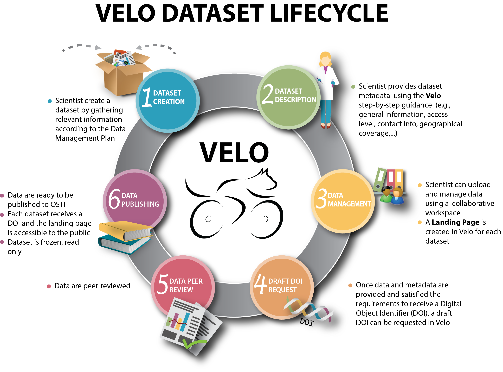

Velo is intended to be a user-friendly platform, helping scientists to remain compliant with their Data Management Plan (DMP) through the life of the research project, and even after the project is completed.
Velo provides a collaborative work environmement which is a key aspects of scientific work. Often, individuals and small groups carry out their analyses using primitive workflow and collaboration tools. For example, data is stored in local or shared file systems with no or minimal associated metadata. Sharing of data, simulation and experimental parameters, analyses and software tools is through email, shared directories and file-sharing sites. Velo provides a central server location which eliminates the need to transfer large data sets between working groups. Permissions are set on directory folders for individuals or teams, and multiple team members can access the same information simultaneously. Data provenance is automatically maintained.
When datasets are ready to be published, Velo offers a step-by-step guidance to provide all information required to remain compliant to US DOE Office of Science expectations. A draft DOI can be requested through Velo. When data have been peer-reviewed, the datasets are ready to be published to OSTI, and each dataset receives a DOI. The landing page becomes accessible to the public and the dataset is frozen, and read-only (it cannot be modifed).
